SEASON BY
SEASON

The 2025–2026 season marked a turning point for Sooner Offroad. The team underwent a full leadership restructure, establishing the three-captain system and subsystem lead hierarchy that now defines the program's organizational model.
The car — named Teddy — featured a custom in-house gearbox, CNC-machined hubs, and a double wishbone suspension tuned for the demands of Baja SAE competition terrain. The team competed at Baja SAE Oregon, finishing 49th overall and earning 10th place in the Cost Presentation event — a strong result reflecting the team's growing technical and engineering report capabilities.
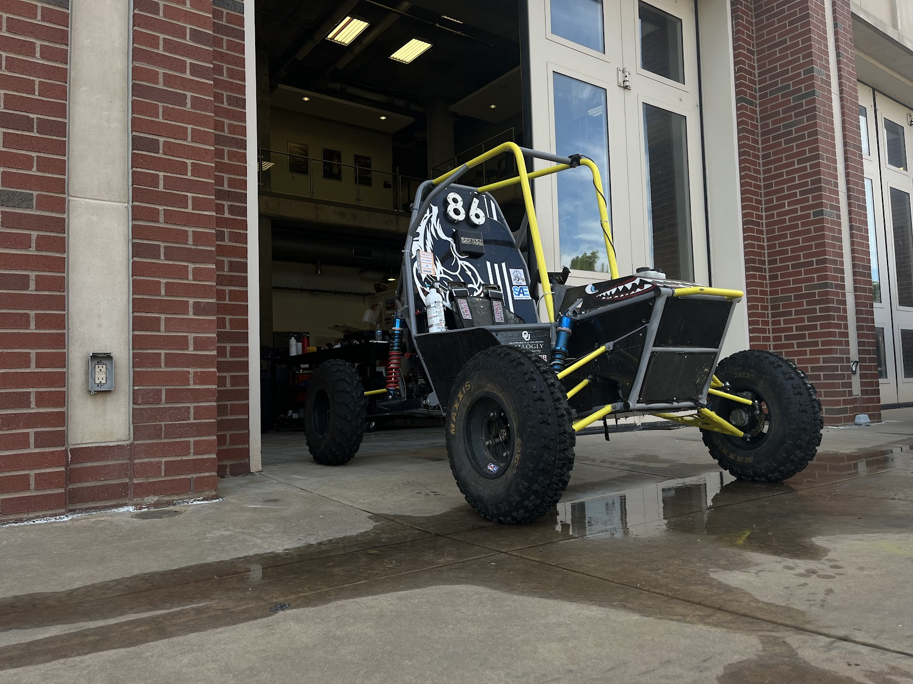
The 2024–2025 season was a deliberate rebuild year. Following personnel turnover across key subsystems, the team's focus shifted inward — rebuilding institutional knowledge, developing newer members, and reinforcing the technical foundations needed to compete at a higher level.
The team did not attend a Baja SAE competition this season. Instead, resources were directed toward shop improvements, design iteration, and preparing the leadership pipeline that would drive the 2025–2026 season's restructure.
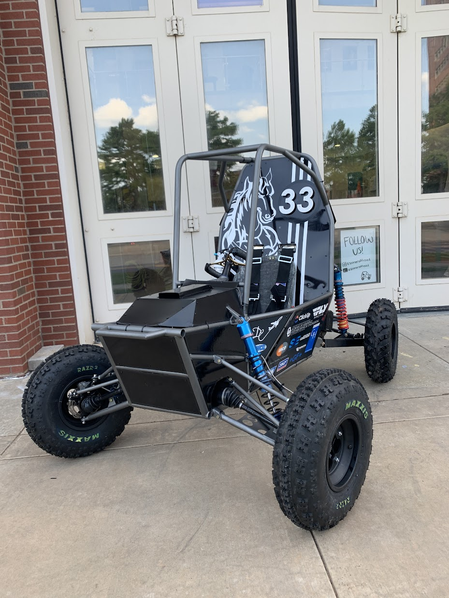
In her third and final season, Stacy carried Sooner Offroad to the inaugural Baja SAE Williamsport competition — a brand new event hosted by Penn College — and came away with one of the program's strongest overall finishes in recent history. Competing against over 100 universities, the team finished 28th overall.
The Cost Presentation event was a standout moment, with the team earning 16th place and demonstrating a high level of engineering documentation and cost analysis relative to the field. Graduating seniors who had carried the program through its rebuild years left a lasting mark on this result before Stacy was retired at season's end.
Stacy's second season continued the team's development as the car was refined and the team gained more competition experience. Full results and details from this season are being compiled and will be added soon.
Stacy's first season introduced a new vehicle platform following the success of Pepper. Full results and details from this season are being compiled and will be added soon.
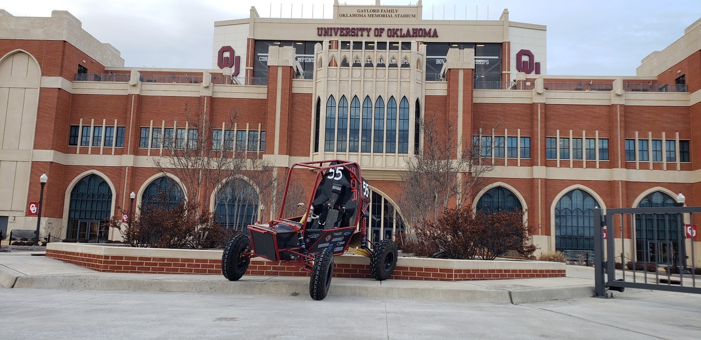
The 2020–2021 season was the program's most decorated in recent history. At Baja SAE Knowledge, Sooner Offroad finished 7th overall out of the full field — inside the top 10 alongside programs like Michigan, Cornell, Georgia Tech, and Oregon State.
The team won the Cost Event outright and took 3rd place in Sales Presentation, demonstrating elite-level engineering documentation and business communication skills. The dynamic results backed up the static performance, with strong finishes across acceleration, maneuverability, and endurance.
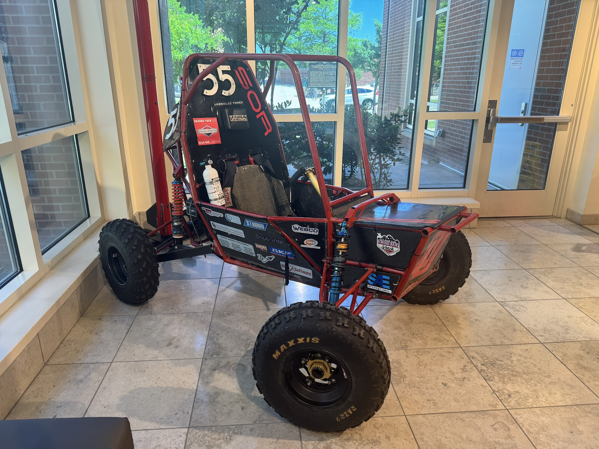
Later in the 2021 season, Sooner Offroad competed at Baja SAE Louisville — Validation Event, finishing 23rd overall in the dynamic events. The team posted competitive numbers across acceleration, maneuverability, hill climb, suspension, and endurance, continuing to demonstrate reliability and consistency across the full event format.
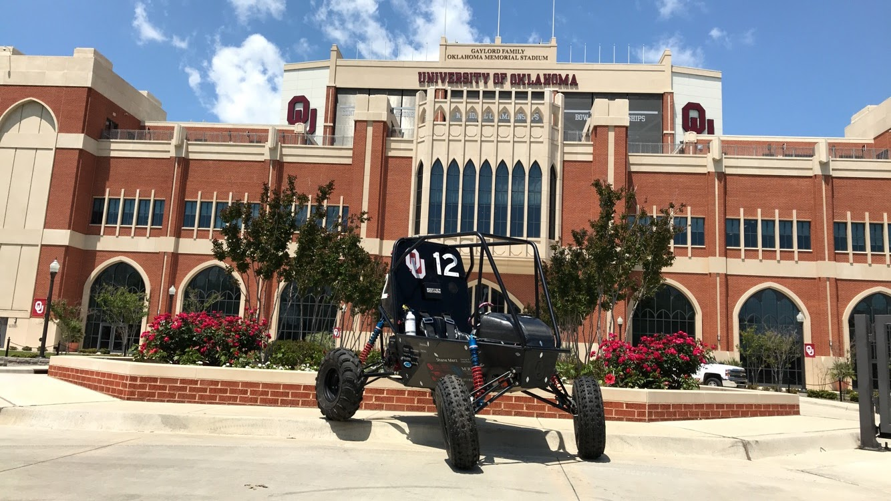
At Baja SAE Louisville 2020, Sooner Offroad competed in the static events and delivered a strong showing — finishing 14th overall in the static category with 77 points in the Cost Event and 110 points in Design. The team passed technical inspection and demonstrated a well-documented, well-engineered vehicle.
Dynamic events were not completed this season, with the competition impacted by the disruptions of 2020. The static results nonetheless showed a team capable of performing at a high level when it counted.
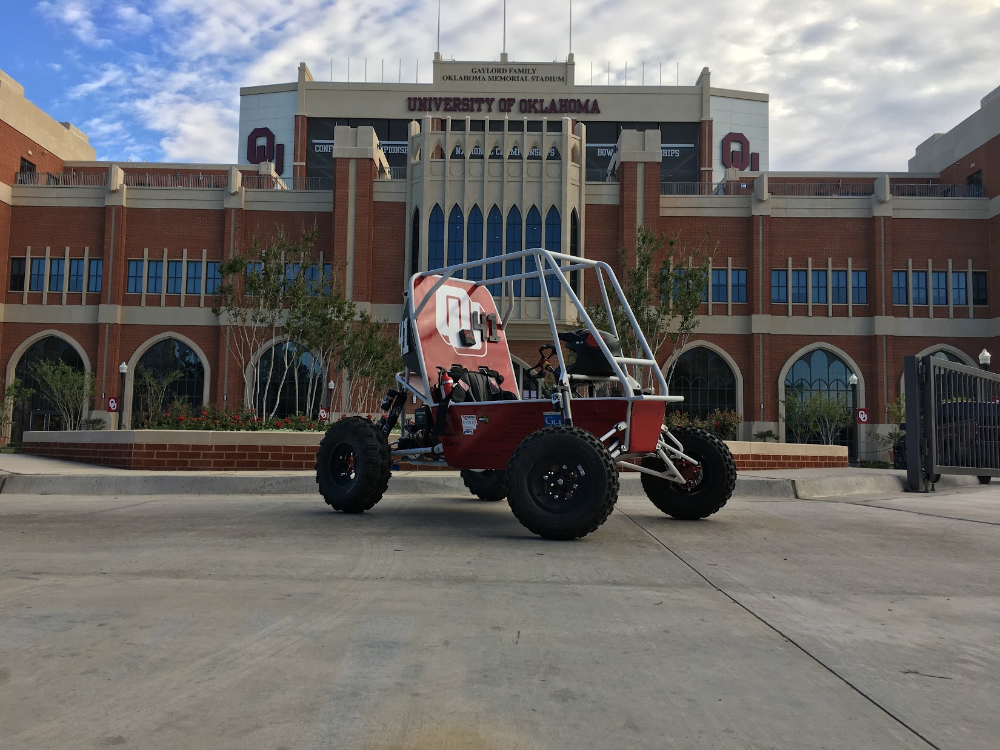
Valerie carried the team through the 2018 season as the program continued building on the momentum established in the revival era. Full competition details and results from this season are being compiled and will be added soon.
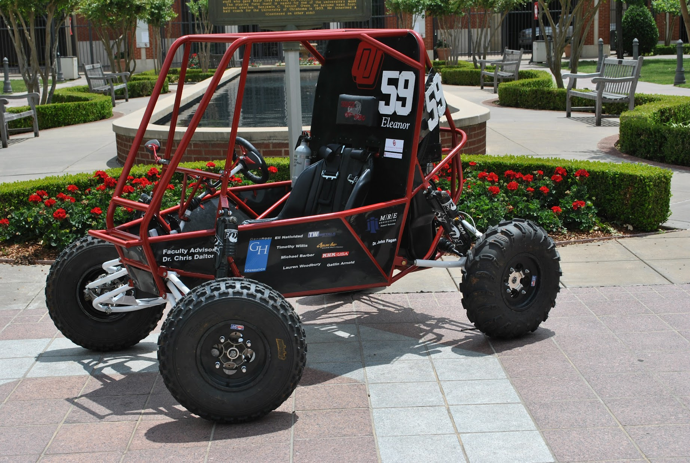
Eleanor represented Sooner Offroad during the 2017 season. Full competition details and results from this season are being compiled and will be added soon.
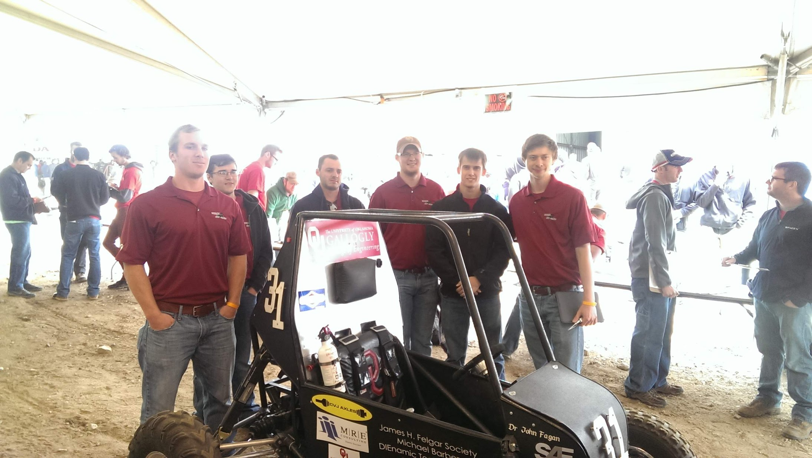
Brandi represented Sooner Offroad during the 2016 season. Full competition details and results from this season are being compiled and will be added soon.
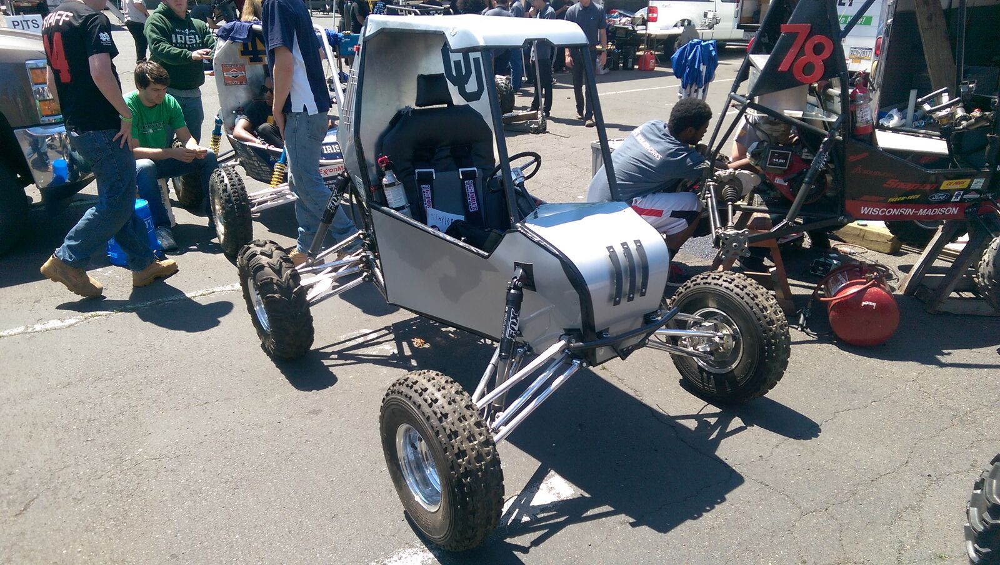
Alice represented Sooner Offroad during the 2015 season. Full competition details and results from this season are being compiled and will be added soon.
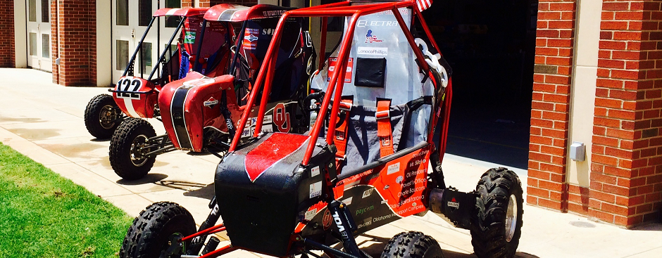
elektra represented Sooner Offroad during the 2014 season. Full competition details and results from this season are being compiled and will be added soon.
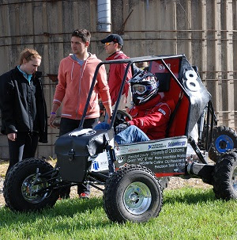
Sheila represented Sooner Offroad during the 2013 season. Full competition details and results from this season are being compiled and will be added soon.
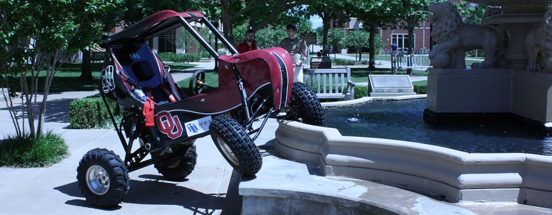
Foxxy represented Sooner Offroad during the 2012 season. Full competition details and results from this season are being compiled and will be added soon.
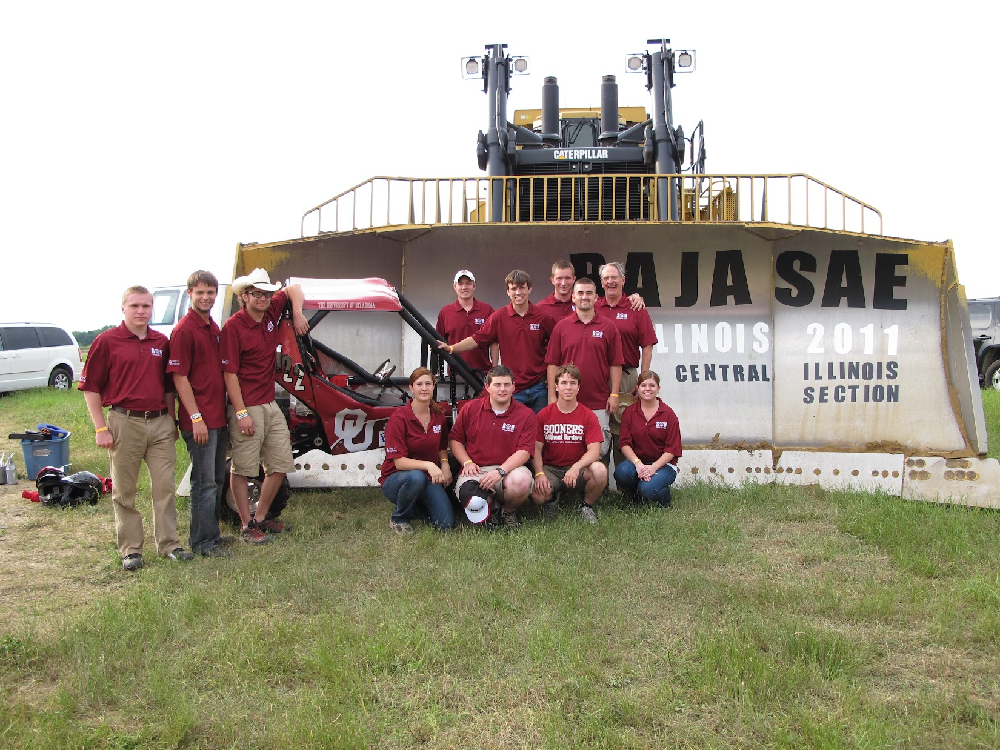
Boxxy represented Sooner Offroad during the 2011 season, continuing the momentum built during the program's revival. Full competition details and results from this season are being compiled and will be added soon.
Leeroy carried Sooner Offroad through the 2010 season, marking one of the program's first competition appearances following its revival. Full competition details and results from this season are being compiled and will be added soon.
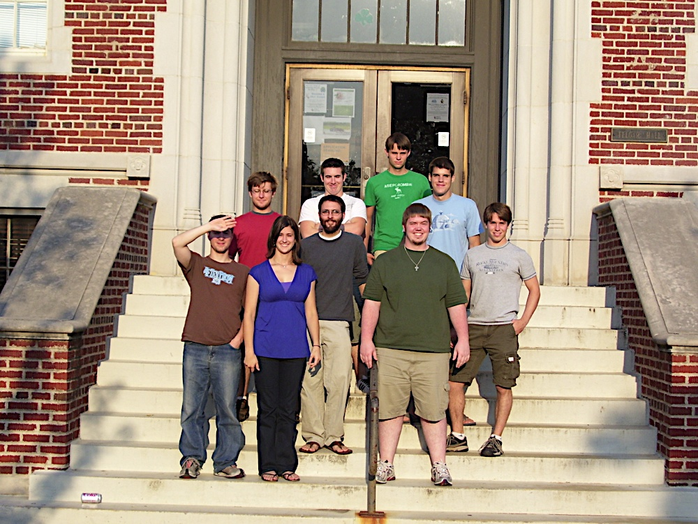
2009 marked the earliest documented season of the revived Sooner Offroad program. The team was assembled and the foundation was laid for Leeroy, the vehicle that would go on to represent the program in the following season.